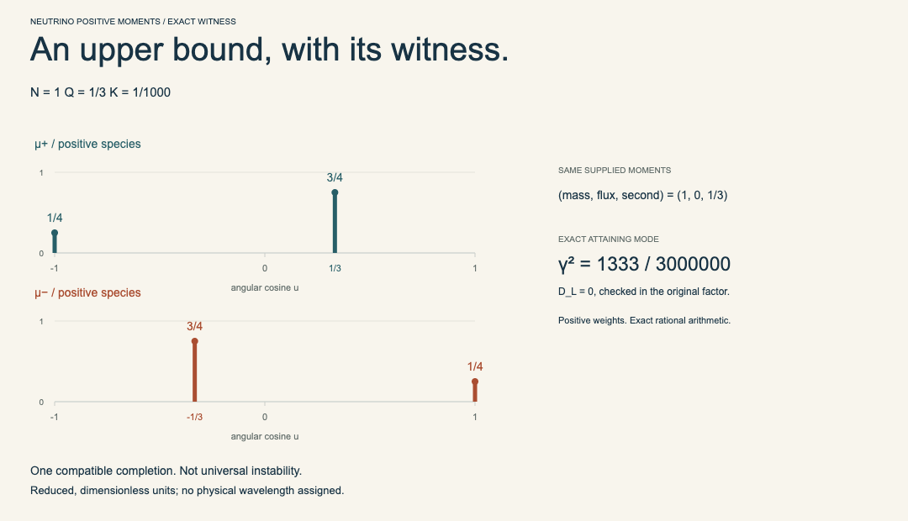

Incomplete angular information permits many positive completions. This one has the same three supplied moments for both species and a growing longitudinal mode. The global upper bound and this finite attainment check are separate claims.

| Species | Angular cosine u | Weight |
|---|---|---|
| plus | -1 | 1/4 |
| plus | 1/3 | 3/4 |
| minus | -1/3 | 3/4 |
| minus | 1 | 1/4 |
python3 -I -S -B -O check.py
Run from this case directory, or the root of the freshly extracted example. The wrapper checks exact native source hashes, all moments, rational root enclosures and a zero of the original longitudinal factor. Altered weights or squared growth are rejected. No optimizer, frequency scan, model fit or scientific package is needed.
This is one existing endpoint witness. The universal all-real-frequency bound comes from the written proof. Compatible does not mean the actual background is unstable. Number moments and reduced dimensionless frequency/wave number require the stated physical normalization. No physical wavelength, nonlinear outcome, occupation-constrained attainment, new theorem, operational astrophysical benefit or independent scientific review is claimed.
The paper remains a working draft dated 2 November 2026, not submitted or peer reviewed. Priority remains unestablished and the fixed counter-flux usefulness gate failed. Full original scientific results and historical drafts remain unchanged.